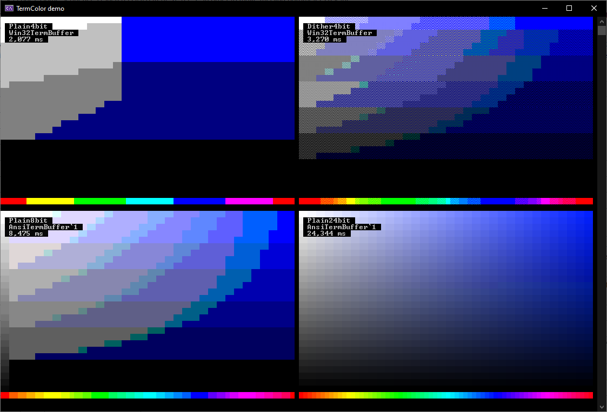
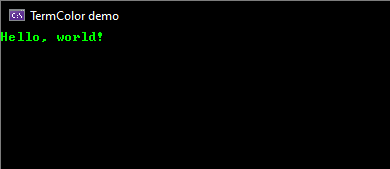

|
💻 TermColor User Manual
|
TermColor is a class library which takes responsibility for bufferring colored text before displaying it to the terminal. It supports multiple color modes, and different platforms (Windows, Unix).
Dither4bit mode, ░▒▓ characters are used to mix different colors using just the basic 16-color palette.
This is a demo showing a slice of the HSV cone in all four different color modes.
Create an instance of TermColor.Terminal. It has similar interface to System.Console. You can write colored text to it, and then flush it all at once to the console window, or to other outputs.
Output:

If you want to contribute, or modify the library for your own use, check out the programmer's manual.
For details, see the generated reference.